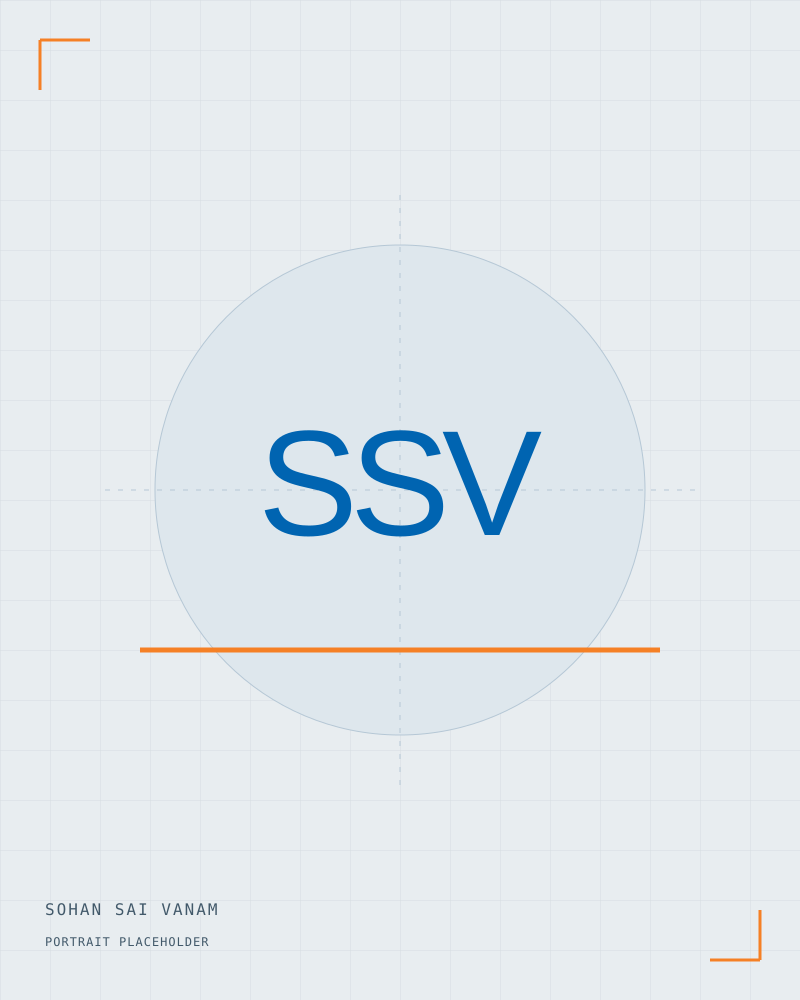

Mechanical Engineering student at UT Arlington
Hi, I’m
Sohan.*
Sohan Sai Vanam
I’m interested in mechanical design, robotics, and turning ideas into working mechanisms. My projects bring together CAD, prototyping, and hands-on problem solving.
Arlington, Texas

What I’ve worked on ↗
Mechanisms, robotics, and simulation—along with the decisions behind them.
02 / About MeOutside the CAD window ↗
Cars, motorsport, community, and the person behind the projects.